人物素材對照
以動畫側臉和你指定的正面臉型為參考，重新生成頭、頸、制服與持劍身體一體的完整人物。右側是重建戰鬥動作的基準圖。
黑鐵一輝 · 側臉參考
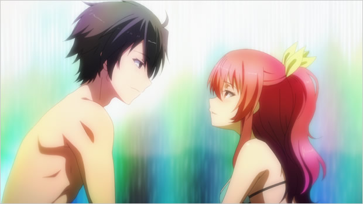
動畫第 5 集官方劇照中的側臉裁切，用來對照鼻線、下巴與髮束方向。
查看完整官方劇照 ↗
這次優先對照
01額頭、鼻尖與下巴輪廓連續。
02頭、頸、肩的透視朝向一致。
03保留動畫版髮束、眼型與長袖制服。
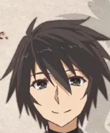
你先前指定的正面臉型
查看完整角色設計圖 ↗
一輝 · 完整側身立繪
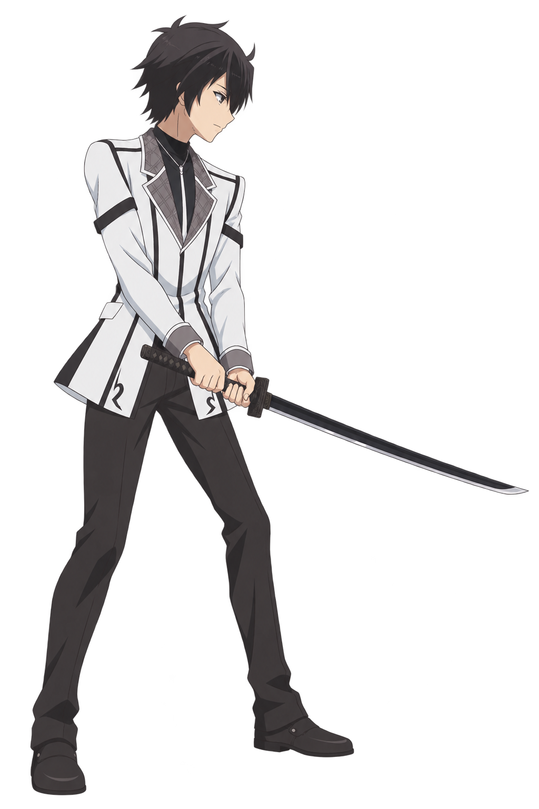
這是完整生成的人物基準圖，頭部與身體在同一張畫面中繪製。可放大檢查側臉、頭身比例與領口銜接；角色相似度仍以你的審美判斷為準。
查看完整基準圖（1024 × 1536）↗
動畫官方參考
查閱角色設計頁與 5 集劇情頁，逐張檢視 30 張官方劇照；加上角色設計圖，選出以下 9 張作為臉型、表情與動作依據。
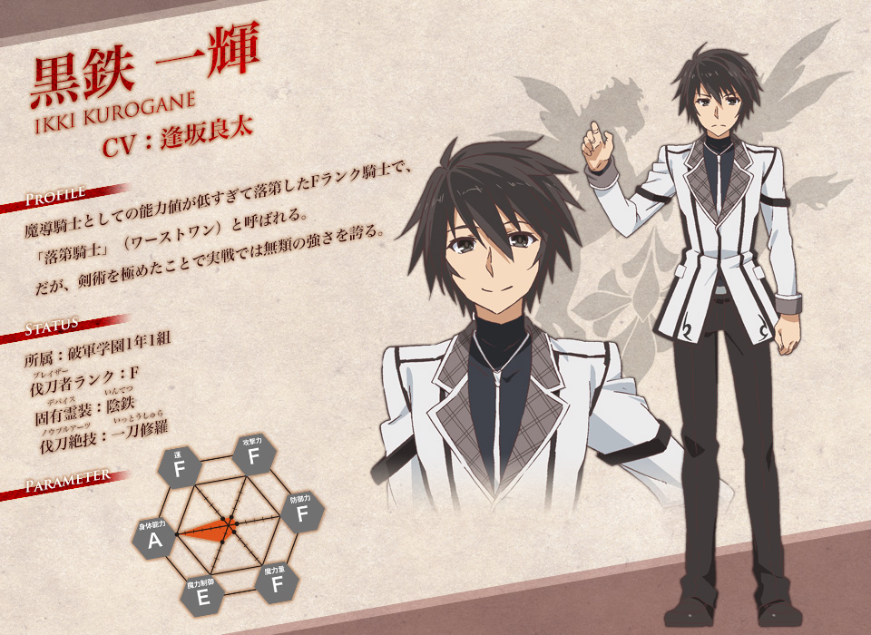
臉型與制服的首要依據
中央正臉與右側全身站姿。你指定的臉部參考來自同一設計，髮型與長袖制服也以這張為準。
動畫官方原圖 ↗960 × 700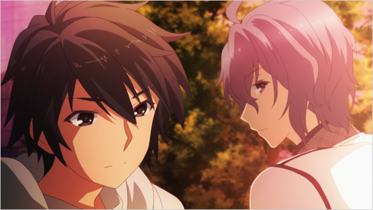
溫和的四分之三臉
一輝在左側：雙頰有體積，下半臉短，眼神柔和。夕陽色偏只作場景參考。
動畫官方原圖 ↗620 × 349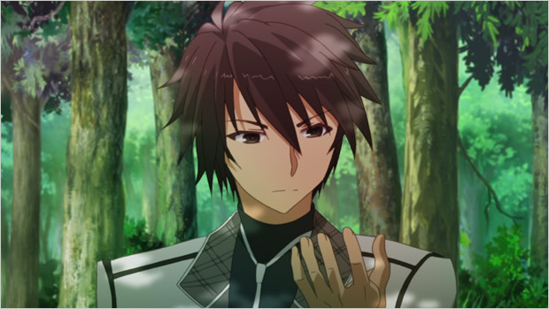
收斂而平靜的正臉
檢查瀏海方向、眼鼻關係與制服領口。樹蔭中的顏色仍須對照角色設計圖。
動畫官方原圖 ↗620 × 349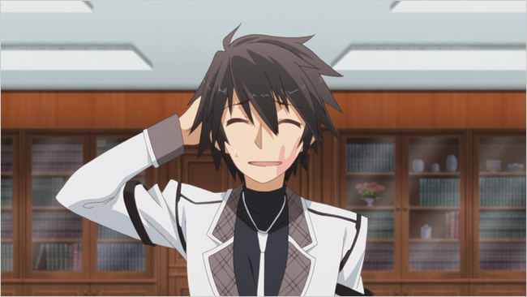
親和、帶一點靦腆
閉眼笑容保留年輕的臉型與雙頰寬度。可取表情和輪廓，睜眼形狀另看設計圖。
動畫官方原圖 ↗650 × 366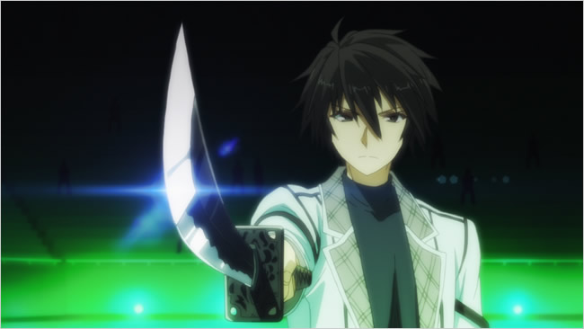
正面向前持劍
正面戰鬥姿勢、握劍手與專注神情。綠色競技場光線不作角色基本配色。
動畫官方原圖 ↗650 × 366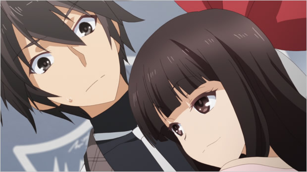
放鬆輪廓裡的驚訝
一輝在左上，珠雫在右下。傾斜的臉仍可看見短下巴和有弧度的眼睛下緣。
動畫官方原圖 ↗620 × 349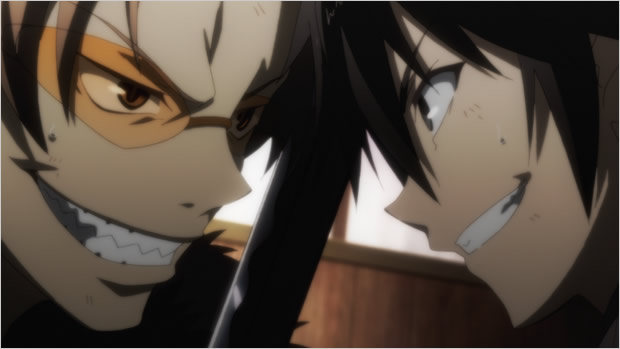
近距離交鋒的側臉
一輝在右側，藏人在左側。取眼鼻與嘴形的關係；咬牙神情只用於戰鬥瞬間。
動畫官方原圖 ↗620 × 349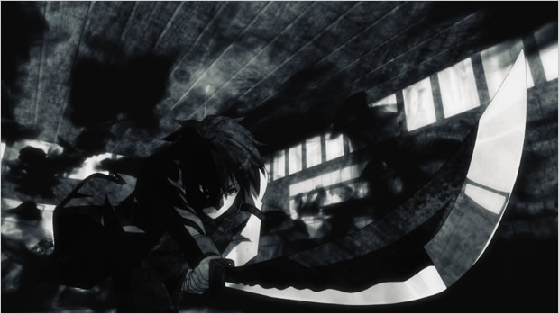
壓低重心，出劍
用於低身攻擊與刀身方向。強透視和黑白光影只取動作，不用來決定臉型或配色。
動畫官方原圖 ↗620 × 349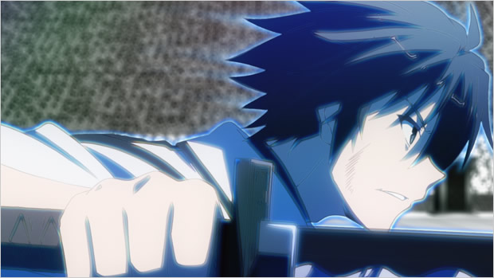
藍色劍光中的突進
向右的戰鬥側臉和握劍手勢。藍光屬於戰鬥效果，日常髮色仍以官方設計為準。
動畫官方原圖 ↗620 × 349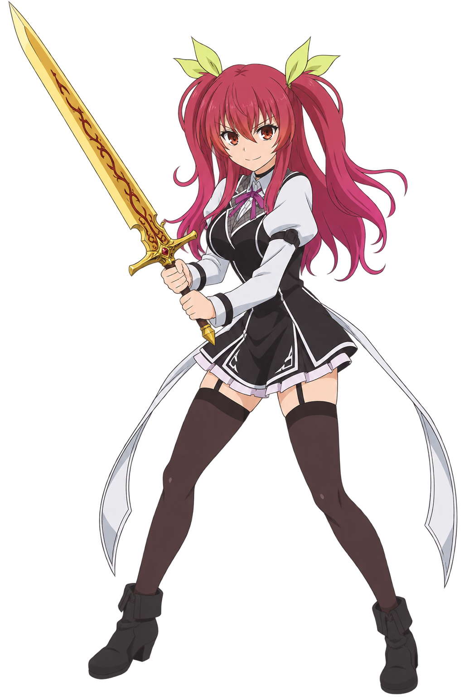
史黛菈素材
未能載入